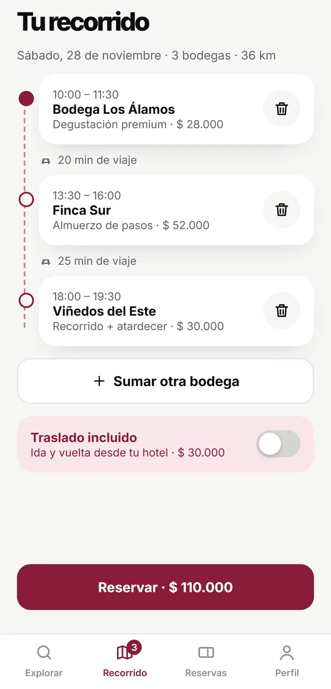

Proyecto conceptual Turismo, app móvil
Ruta del Vino
Un día de bodegas como un solo recorrido, con precio, horario y traslado resueltos antes de salir del hotel.



Resumen del proyecto
- Industria
- Turismo del vino
- Producto
- App móvil para visitantes, bilingüe
- Mi rol
- Investigación, UX, UI y prototipo
- Duración
- 3 semanas
- Herramientas
- Figma, FigJam, JavaScript
- Estado
- Concepto con prototipo funcional. No está publicado como producto
Proyecto propio, sin cliente. La investigación es secundaria (análisis de canales, proto-personas y mapa de empatía); bodegas, precios y cifras son ficticios. El prototipo se validó con una evaluación heurística; el test con usuarios está planificado.
En un minuto
Problema
Quien visita Mendoza busca en varios sitios, escribe a cada bodega y arregla el traslado por su cuenta. El día se arma a último momento.
Enfoque
La unidad es el día, no la bodega. Las experiencias se suman como en un carrito y la app avisa cuando dos horarios no son compatibles.
Resultado
Un prototipo funcional: elegir zona, sumar bodegas, ver tiempos de viaje, activar el traslado y pagar una sola vez.
01Contexto
Planificar un día de bodegas lleva horas.
Quien visita Mendoza busca bodegas en varias webs, escribe por WhatsApp a cada una para reservar y coordina el traslado por su cuenta. Muchas experiencias se agotan sin aviso y el día se arma a último momento.
- Comparar experiencias y precios en un solo lugar
- Reservar con confirmación inmediata
- No tener que manejar después de degustar
- Menos consultas repetidas por WhatsApp
- Llenar los horarios de menor demanda
- Llegar al turismo extranjero
- Poca señal en zonas rurales
- Distancias largas entre bodegas
- Turistas que no hablan español
02Investigación
Cómo se arma hoy una salida.
Analicé los canales por los que hoy se reservan experiencias y me puse en el lugar de dos tipos de turista con necesidades muy distintas.
Canales analizados
Webs de bodegas, agencias, redes con WhatsApp y buscadores de mapas.
Proto-personas
Una turista nacional de fin de semana largo y un turista extranjero.
Mapa de empatía
Para entender qué genera dudas justo antes de reservar.
Benchmark de canales
| Función | Web de bodega | Agencia | Redes y WhatsApp | Mapas | Ruta del Vino |
|---|---|---|---|---|---|
| Varias bodegas juntas | Paquetes cerrados | ||||
| Precio visible | A veces | "Consultar" | |||
| Disponibilidad real | Algunas | ||||
| Confirmación inmediata | Algunas | En horario | |||
| Recorrido del día | Sólo distancias | ||||
| Traslado integrado | |||||
| En inglés | Algunas |
Deslizá la tabla para ver todas las columnas →
Lectura: las agencias resuelven la logística pero con paquetes cerrados; las bodegas tienen la información pero cada una por separado. Nadie deja combinar libremente y reservar todo junto.
Proto-personas
Sofía, 29
Diseñadora · viene de Buenos Aires un fin de semana largo"Quiero visitar tres bodegas el sábado, pero no sé cuáles quedan cerca ni cómo moverme entre una y otra."
Objetivos
- Aprovechar al máximo un solo día
- Saber el costo total de antemano
Frustraciones
- Esperar respuestas por WhatsApp
- No poder manejar si toma vino
James, 41
Ingeniero · turista de Canadá, no habla español"Cada bodega me contesta en español y nunca sé si la reserva quedó confirmada."
Objetivos
- Reservar todo en inglés
- Un comprobante que funcione sin señal
Frustraciones
- Precios "a consultar"
- Pagar sin saber en qué moneda
Mapa de empatía · antes de reservar
"¿Me alcanza el tiempo para tres?" · Miedo a perder el día en traslados · Ganas de una experiencia especial, no de un tour masivo.
Fotos lindas en redes sin precio ni horario · Webs con formularios de contacto · Reseñas que mencionan experiencias agotadas.
Pregunta a amigos qué bodegas recomiendan · Abre diez pestañas · Escribe a varias bodegas a la vez y espera.
"Reservá con anticipación, se llena" · "No vayas manejando" · "Valle de Uco queda lejos, andá temprano".
Incertidumbre sobre precio y disponibilidad · Logística · Idioma.
Un día armado y confirmado · Saber cuánto va a gastar · Disfrutar sin preocuparse por manejar.
Hallazgos clave
El precio oculto frena la reserva
"Consultar precio" obliga a escribir y esperar; muchas personas abandonan en ese punto.
La logística pesa más que la bodega
La pregunta no es sólo "¿qué bodega?", sino "¿cómo llego y cómo vuelvo?".
Se elige por zona
Primero se decide la zona (Luján, Uco, Maipú) y después las bodegas que quedan cerca entre sí.
La unidad es el día
Nadie planea una bodega suelta: se planea un día con horarios que tienen que encajar.
03Definición
Del caos de pestañas a un plan.
¿Cómo podríamos…?¿Cómo podríamos ayudar a quien visita Mendoza a armar un día de bodegas en minutos, con reservas confirmadas y sin preocuparse por cómo moverse?
Principios de diseño
Precio y horario primero
Se ven en la tarjeta, antes de entrar al detalle.
El día como unidad
Se reserva un recorrido, no bodegas sueltas.
Confianza antes de pagar
Confirmación inmediata, moneda clara y política de cancelación visible.
Priorización MoSCoW del MVP
- Explorar por zona
- Precio y horarios
- Recorrido del día
- Reserva inmediata
- Traslado
- Español e inglés
- Voucher sin conexión
- Restaurantes en la ruta
- Reseñas con fotos
- Venta de vinos
- Alojamiento
04Arquitectura
Explorar, sumar, salir.
El recorrido funciona como un carrito: se suman experiencias mientras se explora y se reserva todo junto al final.
Mapa del sitio
- Ruta del Vino
- Explorar zonas · filtros
- Bodega experiencias · horarios
- Mapa de la zona
- Mi recorrido línea de tiempo · traslado
- Pago
- Reservas vouchers sin conexión
- Perfil idioma · moneda · pagos
- Explorar zonas · filtros
Flujo principal: armar el día
05Wireframes
Primero, la estructura.
Baja fidelidad para ordenar la información de cada pantalla. Los números marcan las decisiones.
- Buscador por bodega o tipo de experiencia.
- La zona como primer filtro.
- Precio y próximo horario en la tarjeta.
- Experiencias como lista comparable, con precio a la derecha.
- Horarios del día elegido, sin salir de la pantalla.
- "Sumar al recorrido" en lugar de "Reservar".
- El día como línea de tiempo.
- Tiempo de viaje entre paradas.
- Traslado como interruptor, no como otra pantalla.
- Un código para todo el día, no uno por bodega.
- Paradas con dirección y hora.
- Indicador de "disponible sin conexión".
06Decisiones
Lo que cambió en el camino.
Al recorrer los wireframes con las proto-personas aparecieron tres problemas que resolví antes de pasar a la UI.
El mapa como pantalla principal
Lindo, pero en el celular los pines tapaban lo importante: precio y horario.
Lista por zona, mapa opcional
Las tarjetas muestran precio y próximo horario. El mapa queda a un toque para quien lo necesite.
Reservar bodega por bodega
Tres pagos separados y ninguna garantía de que los horarios encajaran.
Recorrido con chequeo de horarios
Se suman experiencias y la app avisa si la distancia no permite llegar a horario. Un solo pago.
Traslado al final, en otra pantalla
Aparecía después de pagar, cuando ya era tarde para pensarlo.
Un interruptor dentro del recorrido
Se activa con un toque y el total se actualiza en el momento.
07Sistema de diseño
Cálido, local y legible al sol.
Una paleta tomada del malbec y de los atardeceres en los viñedos, con contraste alto porque la app se usa al aire libre.
Color
#8A1C3ABlanco 9,10:1 · AAA#B0466ABlanco 5,34:1 · AA#4F6B2FBlanco 6,04:1 · AA#C9785ADecorativo#F8E6EAMalbec encima 7,58:1#0D0E10Tipografía
Componentes
Accesibilidad y contexto de uso
- Contraste alto pensado para leer bajo el sol
- Voucher guardado en el teléfono para zonas sin señal
- Áreas táctiles de 48 px como mínimo
- Español e inglés, con moneda y formato de hora según el idioma
- Horarios agotados tachados, no sólo en gris
- Textos alternativos en todas las fotos de bodegas
08UI final
Un sábado armado en minutos.
Del descubrimiento al voucher, en alta fidelidad.
Descubrí bodegas cerca tuyo
Bodega Los Álamos
Luján de Cuyo · a 25 minSábado 14 nov
Tu recorrido
Sábado 14 · 3 bodegas · 42 kmConfirmá y pagá
Todo el día en un solo pago- Los Álamos · 10:00
- $ 28.000
- Finca Sur · 13:00
- $ 45.000
- Viñedos del Este · 16:30
- $ 30.000
- Traslado
- $ 30.000
- Total
- $ 133.000 ARS
¡Tu sábado está listo!
● Disponible sin conexión09Validación
Evaluación heurística del prototipo.
Antes de llevarlo a usuarios, evalué el prototipo navegable con las 10 heurísticas de Nielsen y recorrí paso a paso las tareas principales: armar un día con varias bodegas, sumar una de otra zona, activar el traslado, pagar y abrir el voucher. Cada problema lleva su severidad y corregí en el prototipo los más graves.
Hallazgos
| # | Problema y solución | Heurística | Sev. | Estado |
|---|---|---|---|---|
| 1 | Se podía elegir un horario al que no se llega por la distancia; el aviso aparecía recién en "Recorrido".En la bodega, esos horarios aparecen como "No llegás" antes de elegirlos, con la explicación. | H5 · Prevención de errores | 3 | Corregido |
| 2 | Quitar una parada del recorrido no se podía deshacer.El aviso de "Quitamos…" trae un botón "Deshacer". | H3 · Control y libertad | 2 | Corregido |
| 3 | Buscar por zona (por ejemplo "Uco") no devolvía resultados, aunque la gente piensa por zona.El buscador también busca por zona. | H2 · Relación con el mundo real | 2 | Corregido |
| 4 | "Próximo 12:00" no decía de qué día era el horario.La etiqueta muestra el día: "Sáb 12:00". | H1 · Visibilidad del estado del sistema | 1 | Corregido |
| 5 | Desde el detalle de una bodega no hay acceso directo al recorrido.Pendiente: hoy se llega con "Volver" o desde el aviso al sumar una bodega. | H7 · Flexibilidad y eficiencia | 1 | Pendiente |
Deslizá la tabla para ver todas las columnas →
Severidad según la escala de Nielsen: 1 cosmético, 2 menor, 3 mayor, 4 catastrófico. No encontré problemas de severidad 4.
Antes y después
Se podía elegir un horario al que no se llega por la distancia; el aviso aparecía recién en "Recorrido".
En la bodega, esos horarios aparecen como "No llegás" antes de elegirlos, con la explicación.
Buscar por zona (por ejemplo "Uco") no devolvía resultados, aunque la gente piensa por zona.
El buscador también busca por zona.
Próximo paso: test con usuarios
Una evaluación experta encuentra problemas de usabilidad conocidos, pero no mide cómo se comportan las personas reales. El siguiente paso es un test moderado con el prototipo ya corregido, con estas metas y tareas:
Tareas del test con usuarios
| # | Tarea | Éxito si… |
|---|---|---|
| 1 | Armá el sábado con tres bodegas en Luján de Cuyo. | Llega al recorrido con tres paradas sin conflictos de horario. |
| 2 | No querés manejar: resolvé cómo moverte. | Activa el traslado y entiende el nuevo total. |
| 3 | Estás en la bodega sin señal: mostrá tu reserva. | Abre el voucher desde Reservas en modo avión. |
| 4 | Cambiá el almuerzo por otra bodega. | Reemplaza la parada sin rehacer todo el recorrido. |
Participantes: 6 personas que hayan viajado por turismo en el último año: 3 que hablen español y 3 que no.
10Aprendizajes
Lo que me llevo.
- Cambiar la unidad de "bodega" a "día" reordenó toda la arquitectura.
- Bilingüe no es sólo traducir: también cambian moneda, formato de hora y expectativas.
- El contexto de uso (sol, sin señal) define decisiones visuales concretas.
- Test con turistas reales en Mendoza, en temporada alta.
- Panel para que las bodegas carguen cupos y precios.
- Recomendaciones según el tipo de vino que le gusta a cada persona.